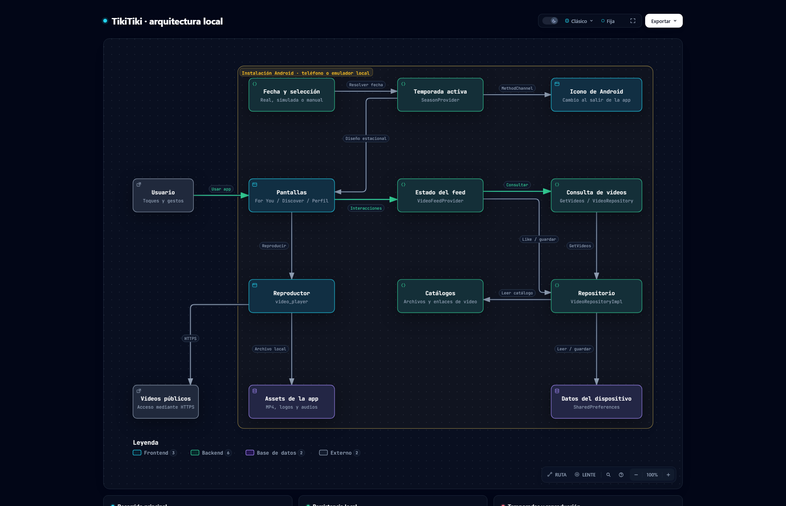
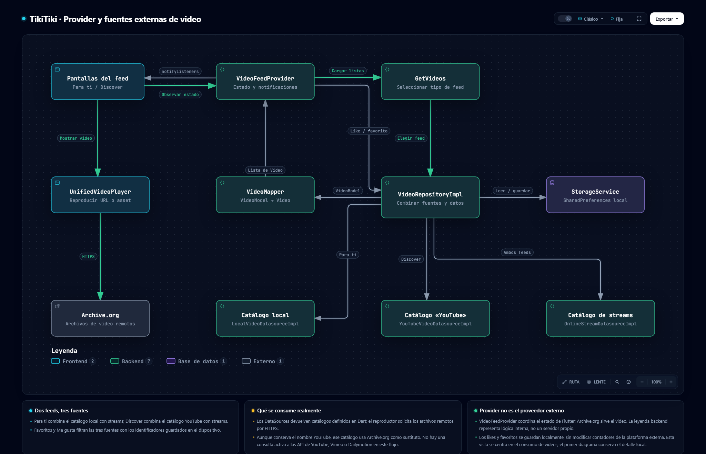

01 / EN EL DISPOSITIVO
Arquitectura local
Cómo se conectan las pantallas, la lógica de videos, los archivos y las preferencias guardadas. Sigue el recorrido de un like y el cambio de temporada.
Explorar diagrama local →Desarrollo Móvil Integral · 10A
Una app de videos cortos con diseños por temporada y Me gusta persistentes. Recorre su arquitectura local y el consumo de videos de fuentes externas con dos diagramas interactivos creados con Archify.
APK cargado en Appetize · Enlace verificado · Diagramas con fuentes de código

Cómo se conectan las pantallas, la lógica de videos, los archivos y las preferencias guardadas. Sigue el recorrido de un like y el cambio de temporada.
Explorar diagrama local →
Cómo el Provider carga los feeds, el repositorio combina tres catálogos y el reproductor consume los videos remotos. Incluye los likes y favoritos guardados en el dispositivo.
Explorar consumo de videos →Abre una vista y selecciona sus componentes para consultar el código fuente. Puedes cambiar el tema, ampliar y exportar desde el visor de Archify.
En la demo, marca el video de @tikitiki_demo. Para comprobar el dato guardado, cierra y reabre la app conservando la misma sesión Android.
El README reúne 12 figuras de Halloween, Navidad, San Valentín y el cambio de 0 a 1 like. Esas capturas corresponden al emulador local.